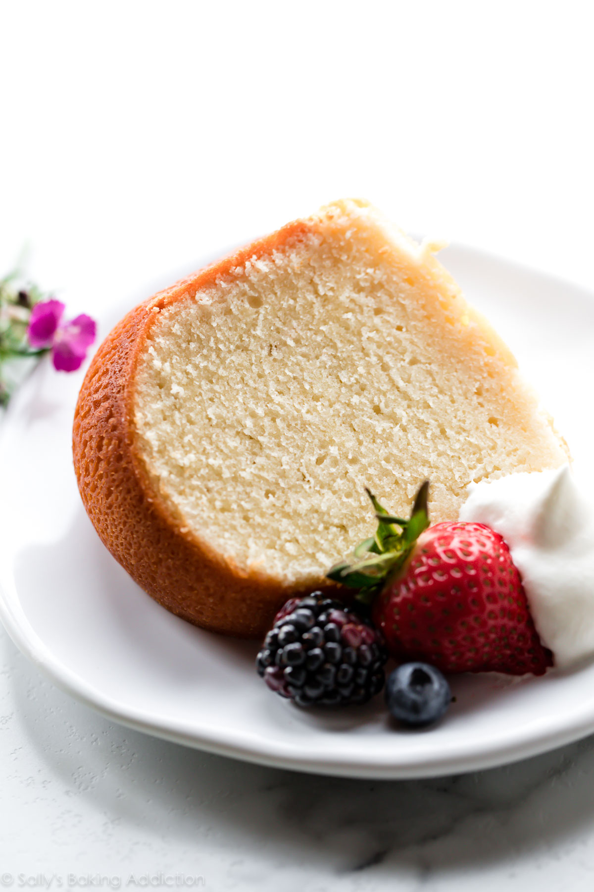

Pound Cake
Pound cake is one of those recipes everyone should have in their recipe box. It's so easy, simple and delicious.
Make it the next time you have guests over. They will think you slaved all day!
Ingredients
- 1 and 1/2 cups (3 sticks; 345g) unsalted butter, softened to room temperature
- 8 ounce (226g) block full-fat cream cheese, softened to room temperature
- 2 and 1/2 cups (500g) granulated sugar
- 1/3 cup (80g) sour cream, at room temperature
- 2 teaspoons pure vanilla extract
- 6 large eggs, at room temperature
- 3 cups (354g) cake flou
- 1/2 teaspoon baking powder
- 1/8 teaspoon salt
- optional for serving: whipped cream and berries
Directions
- Preheat oven to 325°F. Generously grease a 10-12 cup Bundt pan with butter or nonstick spray.
- Using a handheld or stand mixer fitted with a paddle or whisk attachment, beat the butter on high speed
until smooth and creamy, about 2 minutes. Scrape down the sides and up the bottom of the bowl with a
rubber spatula. Add the cream cheese and beat on high speed until completely smooth and combined, about 1
minute. Add the sugar and beat on high speed until combined, about 1 minute, then add the sour cream
and vanilla and beat on high speed until combined and creamy. Scrape down the sides and up the bottom of
the bowl with a rubber spatula.
- Pour/spoon batter evenly into prepared pan. Bang the pan on the counter once or twice to bring up any
air bubbles. Bake for 75-95 minutes. Loosely tent the baking cake with aluminum foil halfway through bake
time to ensure the surface does not over-brown. The key to pound cake is a slow and low bake time. Use a
toothpick to test for doneness. Once it comes out completely clean, the pound cake is done. This is a large
heavy cake so don’t be alarmed if it takes longer in your oven. If it needs longer, bake longer.
- Remove cake from the oven and allow to cool for 2 hours inside the pan. Then invert the slightly
cooled pound cake onto a wire rack or serving dish. Allow to cool completely.
- Slice and serve with optional toppings.
- Cover leftover cake tightly and store in the refrigerator for up to 5 days.